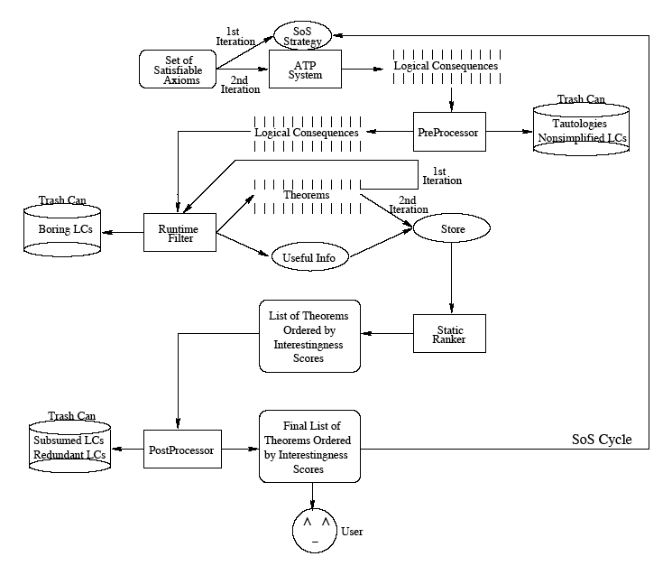

Architecture

TSTP Format
- Annotated formulae
- JJParser
LC Generation
- CNF only
- Axiom set
- ATP system - E
- PreProcessor
LC Evaluation
- RunTime filters: Complexity, Obviousness, Intensity
- Static rankers: Surprisingness, Applicability, Usefulness
- PostProcessor: Novelty, Utility
SoS Cycle
- Initiallly put axioms in SoS
- Refocus by placing theorems in SoS